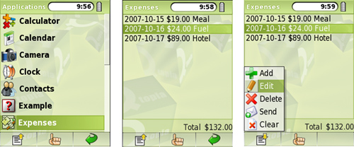
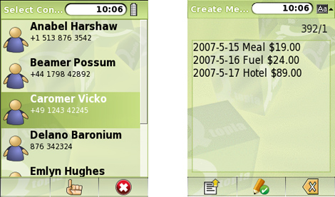

|
|
Qtopia PDA Edition and Qtopia Phone Edition provide sets of applications that are relevant to mobile device users. Most of these applications have their functionality abstracted out into libraries, or make use of edition-specific libraries. These libraries can be used in our own Qtopia applications, giving us access to device services such as alarms, email, phone dialing, SMS, voice recording, and many others.
If we want to access device-specific features from our applications, we have many options:
We can use Qt/Embedded Linux and write our own code for interacting with the device.
We can take an existing Qtopia application and modify it to have the functionality we want.
We can write using the additional APIs, for example, the Qtopia Phone API or the Qtopia PIM (Personal Information Manager) application's library.
In this section, we will take the last of these approaches. We will write a small application that records simple information about expenses. It makes use of the Qtopia PIM application's data to pop up a list of contacts, and then sends an expense report to the selected contact as an SMS message. It also demonstrates how to use Qtopia's support for the multi-function "soft keys" found on most mobile phones.
As Figure 24.4 shows, the application will end up in the application packages list, just like the example application we built in the previous section. As before, we will begin by looking at the .pro file, then the .desktop file, and finally the application's source files. Here's expenses.pro:
qtopia_project(qtopia app)
depends(libraries/qtopiapim)
CONFIG += qtopia_main no_quicklaunch
HEADERS += expense.h \
expensedialog.h \
expensewindow.h
SOURCES += expense.cpp \
expensedialog.cpp \
expensewindow.cpp \
main.cpp
INSTALLS += desktop pics
desktop.files = expenses.desktop
desktop.path = /apps/Applications
desktop.hint = desktop
pics.files = pics/*
pics.path = /pics/expenses
pics.hint = pics
pkg.name = expenses
pkg.desc = A program to record and SMS expenses
pkg.version = 1.0.0
pkg.domain = window

The qtopia_project() line is the same as before. Since this application relies on the Qtopia PIM library, we use a depends() directive to specify the library. If we want to use multiple libraries, we can do so by separating them with commas. The rest of the .pro file is similar to what we saw in the Unit Converter example, only this time we have a few more source files because the application is more elaborate.
The expenses.desktop file is very similar to the one we saw before:
[Desktop Entry] Comment[]=A program to record and SMS expenses Exec=expenses Icon=expenses/expenses Type=Application Name[]=Expenses
The same is true of main.cpp:
#include <QtopiaApplication>
#include "expensewindow.h"
QTOPIA_ADD_APPLICATION("Expenses", ExpenseWindow)
QTOPIA_MAIN
We will now look at the Expenses application's header files and those parts of the source files that are Qtopia-specific or particularly relevant, starting with the Expense class:
class Expense
{
public:
Expense();
Expense(const QDate &date, const QString &desc, qreal amount);
bool isNull() const;
void setDate(const QDate &date);
QDate date() const;
void setDescription(const QString &desc);
QString description() const;
void setAmount(qreal amount);
qreal amount() const;
private:
QDate myDate;
QString myDesc;
qreal myAmount;
};
This simple class holds a date, a description, and an amount. We won't review the expense.cpp file since none of its code is Qtopia-specific and it is very simple.
class ExpenseWindow : public QMainWindow
{
Q_OBJECT
public:
ExpenseWindow(QWidget *parent = 0, Qt::WFlags flags = 0);
protected:
void closeEvent(QCloseEvent *event);
private slots:
void add();
void edit();
void del();
void send();
void clear();
private:
void createActions();
void createMenuOrToolBar();
void loadData();
void showData();
...
QList<Expense> expenses;
};
The ExpenseWindow is the application's main form. It provides functions for the user to add, edit, and delete individual expense items, to send an SMS message with all of them listed, and to clear them. The expenses are held as values in a QList<Expense>.
The constructor creates a QListWidget and two QLabels. One label shows the text "Total", and the other the sum of the expenses. The actions are created by the createActions() function, and the menu or toolbar is created by the createMenuOrToolBar() function. Both functions are called from the constructor. Any preexisting expenses are loaded at the end of the constructor by calling the loadData() function. We will skip the constructor itself, and instead just review the functions that it calls.
void ExpenseWindow::createActions()
{
addAction = new QAction(tr("Add"), this);
addAction->setIcon(QIcon(":icon/add"));
connect(addAction, SIGNAL(triggered()), this, SLOT(add()));
...
clearAction = new QAction(tr("Clear"), this);
clearAction->setIcon(QIcon(":icon/clear"));
connect(clearAction, SIGNAL(triggered()), this, SLOT(clear()));
}
The createActions() function creates the Add, Edit, Delete, Send, and Clear actions. Although it is possible to use Qt resource (.qrc) files, when programming Qtopia applications the standard practice for icons is to store them in a pics subdirectory that gets copied on to the device (thanks to the .pro file's INSTALLS line). These can then be shared among several applications, and Qtopia optimizes access to them using a special database.
Everywhere Qt or Qtopia expects a file name, we can supply a Qtopia resource name instead. These are identified by a leading colon in the file name, followed by a word specifying the kind of resource. In this case, we specify that we want icons and give a file name, for example, :icon/add, omitting the file extension. Qtopia will look for a suitable icon in a number of standard locations, starting with the application's pics directory. See http://doc.trolltech.com/qtopia4.2/qtopia-resource-system.html for all the details.
void ExpenseWindow::createMenuOrToolBar()
{
#ifdef QTOPIA_PHONE
QMenu *menuOrToolBar = QSoftMenuBar::menuFor(listWidget);
#else
QToolBar *menuOrToolBar = new QToolBar;
addToolBar(menuOrToolBar);
#endif
menuOrToolBar->addAction(addAction);
menuOrToolBar->addAction(editAction);
menuOrToolBar->addAction(deleteAction);
menuOrToolBar->addAction(sendAction);
menuOrToolBar->addAction(clearAction);
}
Some phones have "soft keys", that is, multi-function keys whose actions are application- or context-specific. The QSoftMenuBar class takes advantage of soft keys where they are available, and provides a popup menu when they are not. For PDAs, we would normally have a toolbar rather than a popup menu. The #ifdef directive ensures that the actions are added to a soft menu if the target is a phone and to a toolbar if the target is a PDA.
Users will expect to be able to close the application without being forced to explicitly save their data. They will also expect the data to be restored when they restart the application at a later time. This is easily taken care of by calling loadData() in the constructor, and saving the data in the application's closeEvent(). Qtopia offers many choices for data storage, including saving to a table in a SQLite database or saving to a file. Since the expense data is so small, we will save it using QSettings. We will look at how it is saved, and then at how it is loaded.
void ExpenseWindow::closeEvent(QCloseEvent *event)
{
QByteArray data;
QDataStream out(&data, QIODevice::WriteOnly);
out.setVersion(QDataStream::Qt_4_2);
foreach (Expense expense, expenses) {
out << expense.date() << expense.description()
<< expense.amount();
}
QSettings settings("BookSoft Ltd", "Expenses");
settings.setValue("data", data);
event->accept();
}
We create a single QByteArray and write all the data to it. Then we save the byte array as a single value under the key data, before accepting the close event to allow the application to terminate.
void ExpenseWindow::loadData()
{
QSettings settings("BookSoft Ltd", "Expenses");
QByteArray data = settings.value("data").toByteArray();
if (data.isEmpty())
return;
expenses.clear();
QDataStream in(&data, QIODevice::ReadOnly);
in.setVersion(QDataStream::Qt_4_2);
while (!in.atEnd()) {
QDate date;
QString desc;
qreal amount;
in >> date >> desc >> amount;
expenses.append(Expense(date, desc, amount));
}
showData();
}
If data exists from a previous session, we clear the existing data and then read in each new expense item. The showData() function clears the list widget, then iterates over the expenses, adding a new list item for each expense, and finishes by updating the total amount label.
Once the application is running, the user can add, edit, or delete expense items, send them all in an SMS message, or clear them all.
For deleting, we check to see whether there is a valid current row in the list widget, and then we use a standard QMessageBox::warning() static convenience function to ask the user to confirm the deletion. If the user chooses to clear all their expenses, again we use a message box. All of this is standard Qt programming. Qtopia takes care of making the message box display and integrate properly in the Qtopia environment.
If the user chooses the Add option to add a new expense item, the add() slot is called:
void ExpenseWindow::add()
{
ExpenseDialog dialog(Expense(), this);
if (QtopiaApplication::execDialog(&dialog)) {
expenses.append(dialog.expense());
showData();
}
}
This slot creates an ExpenseDialog, a class we will look at shortly, but instead of calling the dialog's QDialog::exec() function, we call QtopiaApplication::execDialog(), passing the dialog as the argument. Calling exec() is perfectly valid and does work, but using execDialog() ensures that the dialog is sized and positioned appropriately for a small device, maximizing it if necessary.
The edit() slot is similar. If the edit() function is called, it checks that there is a valid current row in the list widget, and if there is, it passes the expense that corresponds to that row as the first parameter to the ExpenseDialog's constructor. If the user accepts the edit, the original expense's details are overwritten with the edited details.
The last ExpenseWindow function that we will cover is send(), but before that, we will discuss the ExpenseDialog class:
class ExpenseDialog : public QDialog
{
Q_OBJECT
public:
ExpenseDialog(const Expense &expense, QWidget *parent = 0);
Expense expense() const { return currentExpense; }
public slots:
void accept();
private:
void createActions();
void createMenuOrToolBar();
Expense currentExpense;
...
};
One aspect that is immediately apparent is that we have functions for creating actions and a menu or toolbar just like in ExpenseWindow. We will not be creating QPushButtons or a QDialogButtonBox, but instead will create a toolbar or a QSoftMenuBar since these provide much better integration with the Qtopia environment than creating buttons. The code is very similar to what we did for the application's main window:
void ExpenseDialog::createActions()
{
okAction = new QAction(tr("OK"), this);
okAction->setIcon(QIcon(":icon/ok"));
connect(okAction, SIGNAL(triggered()), this, SLOT(accept()));
cancelAction = new QAction(tr("Cancel"), this);
cancelAction->setIcon(QIcon(":icon/cancel"));
connect(cancelAction, SIGNAL(triggered()), this, SLOT(reject()));
}
void ExpenseDialog::createMenuOrToolBar()
{
#ifdef QTOPIA_PHONE
QMenu *menuOrToolBar = QSoftMenuBar::menuFor(this);
#else
QToolBar *menuOrToolBar = new QToolBar;
menuOrToolBar->setMovable(false);
addToolBar(menuOrToolBar);
#endif
menuOrToolBar->addAction(okAction);
menuOrToolBar->addAction(cancelAction);
}
If the user accepts the dialog, we set the date, description, and amount attributes of the current expense, and leave the caller to retrieve this using the dialog's expense() function.
If the user chooses the Send action, the send() function is called. This function prompts the user to choose a contact to send the expenses to, prepares the text of a message to send, and then sends the message using the SMS protocol (see Figure 24.5).
void ExpenseWindow::send()
{
QContactSelector dialog(false, this);
dialog.setModel(new QContactModel);
QtopiaApplication::execDialog(&dialog);
if (!dialog.contactSelected())
return;

The QContactSelector dialog and the QContactModel model/view class are both provided by the PIM library. QContactModel accesses the user's centralized contacts database. If there are more than a few contacts,QtopiaApplication::execDialog() will pop up the QContactSelector dialog maximized. If the user does not choose a contact, the contactSelected() function returns a null contact (which evaluates to false), in which case we do nothing. Otherwise, we prepare and then send the expenses:
QTemporaryFile file;
file.setAutoRemove(false);
if (!file.open()) {
QMessageBox::warning(this, tr("Expenses"),
tr("Failed to send expenses: %1.")
.arg(file.errorString()));
return;
}
QString fileName = file.fileName();
qreal total = 0.00;
QTextStream out(&file);
out.setCodec("UTF-8");
out << tr("Expenses\n");
foreach (Expense expense, expenses) {
out << tr("%1 $%2 %3\n")
.arg(expense.date().toString(Qt::ISODate))
.arg(expense.amount(), 0, 'f', 2)
.arg(expense.description());
total += expense.amount();
}
out << tr("Total $%1\n").arg(total, 0, 'f', 2);
file.close();
To send an SMS message, we will need to pass the name of a file that contains the SMS message. Here, we write the expenses data to a temporary file using QTextStream. Normally, QTemporaryFile removes the file as soon as we call close(), but we switch off this behavior because the file must be available until the SMS has been sent, at which point Qtopia will automatically remove it.
The total variable is declared with type qreal. This type is a typedef for float or double, depending on the architecture. For example, on ARM, it is defined as a float for performance reasons. Throughout Qt's API (notably in QPainter), qreal is used rather than double.
QContact contact = dialog.selectedContact();
QtopiaServiceRequest request("SMS",
"writeSms(QString,QString,QString)");
request << QString("%1 %2").arg(contact.firstName())
.arg(contact.lastName())
<< contact.defaultPhoneNumber() << fileName;
request.send();
}
Qtopia implements the SMS protocol as a service rather than as a library. To send an SMS, we create a QtopiaServiceRequest object, giving it the name of the service, "SMS", and the name of the function we want to use with the arguments listed in parentheses: "writeSms (QString, QString, QString)". Under the hood, QtopiaServiceRequest uses QCOP to communicate with the process that provides the "SMS" service.
We populate the request with the recipient's name and phone number, and the name of the file we created, and we call send() to send the message. When send() is executed, a Create Message dialog is popped up by the Qtopia system with the body of the message filled in from the file. The user can change the text, and then either send or cancel the SMS. The Expenses application can only be properly tested using an actual or simulated device that provides the SMS service.
As this example illustrates, embedded programming means that we must consider how we can use and interoperate with the services and Qtopia-specific APIs that are available. And it requires us to think very differently about user interface design to account for the small screens and limited input facilities that small devices have to offer. From a programmer's point of view, writing applications for Qtopia is no different than for desktop platforms, except that we must familiarize ourselves with the additional tools, libraries, and services that are available with Qtopia.
|
|
| Converted from CHM to HTML with chm2web Pro 2.85 (unicode) |